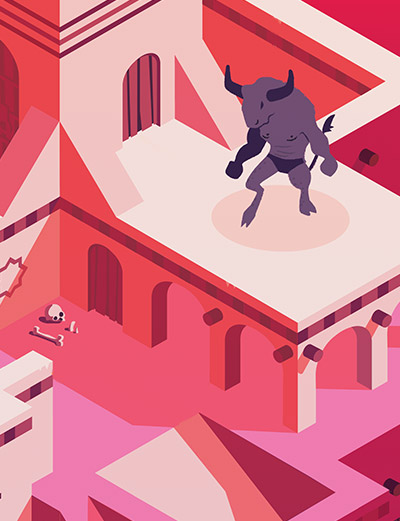
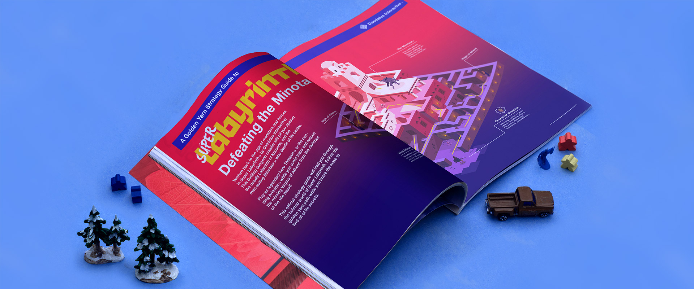

Super Labyrinth Poster


Illustration, Layout
I illustrated this piece as a throwback to the glossy videogame magazines of my youth, and the game graphics they showcased. The imaginary game is loosly based on the myth of Thesus and the Minotaur.
Thanks!